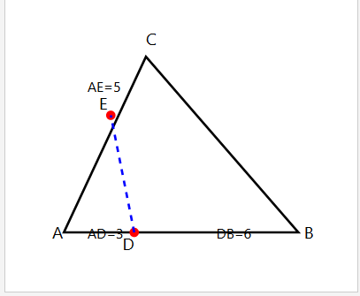
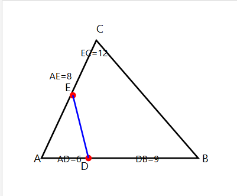
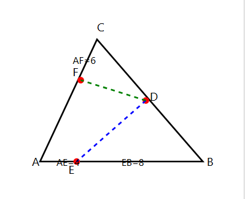
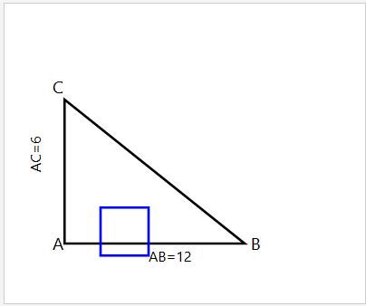

درس: هندسه (1) - مبحث: قضیه تالس و تشابه مثلثها
نام و نام خانوادگی: .....................................................
تعداد سوالات: 10 سوال تستی
زمان پاسخگویی: 15 دقیقه
در شکل زیر، `MN || BC` است. با توجه به اندازههای داده شده، طول `NC` کدام است؟
در مثلث `ABC`، پارهخط `DE || BC` میباشد. طول `BC` کدام است؟
در شکل زیر، `AB || CD` است. طول پارهخط `CD` چقدر است؟
در ذوزنقه `ABCD` که `AB || CD` است، قطرها یکدیگر را در نقطه `O` قطع کردهاند. اگر `AB = 6`، `CD = 9` و `BD = 20` باشد، طول `OB` کدام است؟
در مثلث قائمالزاویه `ABC` (`∠A=90°`)، ارتفاع `AH` را رسم کردهایم. اگر `AC = 12` و `BC = 20` باشد، طول `BH` کدام است؟
در مثلث `ABC`، نقاط `D` بر روی `AB` و `E` بر روی `AC` طوری قرار دارند که `AD = 3`، `AE = 4`، `DB = 5` و `EC = 2` میباشد. نسبت `DE/BC` کدام است؟
در شکل زیر، `DE || BC` و `EF || AB` است. اگر `AD = 8` و `DB = 4` باشد، نسبت `BF/FC` کدام است؟
در مثلث `ABC`، پارهخط `DE` موازی قاعده `BC` رسم شده است، به طوری که مساحت ذوزنقه `DBCE`، پانزده برابر مساحت مثلث `ADE` است. نسبت `AD/AB` کدام است؟
در مثلث `ABC`، نقطه `D` وسط ضلع `BC` و نقطه `E` وسط میانه `AD` است. در امتداد `BE`، ضلع `AC` را در نقطه `F` قطع میکنیم. نسبت `AF/FC` کدام است؟
در مستطیل `ABCD`، نقطه `M` وسط `BC` است. پارهخط `DM`، قطر `AC` را در نقطه `N` قطع میکند. اگر `AB = 6` و `AD = 8` باشد، طول `AN` کدام است؟